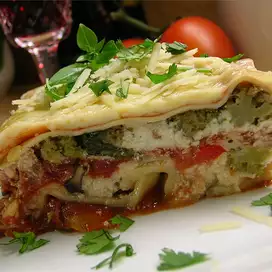

Lasagna

Homemade Lasagna For Noobs
Have youe ever wanted to make delicous lasagna and impress your'e friends(What are those?) well look no further beacause i've got you covered.
Ingreidents
- 1 pound sweet italian sausage
- 3/4 pound lean ground beef
- 1/2 cup minced garlic, crushed
- (28 ounce) can crushed tomato paste
- 2 (6 ounce) cans canned tomato sauce
- 1/2 cup water
- 2 table spoons white surgar
- 1/2 teaspoon dried basil leaves
- 1/2 teaspon fennel seeds
- 1 teaspoon italian seasoning
- teaspon salt,dived, or to taste
- 1/4 teaspoon black pepper
- 4 tablespoons chopped fresh parsely
- 12 lasagna noodles
- 16 ounces ricotta cheese
- 1 egg
- 3/4 pound mozarella cheese, sliced
- 3/4 cup grated Parmasean cheese
Steps
- In a oven cook sausasge ground beef, onion and garlic over medium heat until well browned. Stir in crushed tomatoes tomato paste and water.
Season with sugar, basil fennel seeds,Italian seasoning 1 teaspoon salt and 2 tablespoons parsley. Simmer, coverd for about 1 1/2 hours stirring occasionally.
- Bring a large pot od salted water to a boil. Cook lasagna noodles in boiling water for 8-10 minutes then rinse with cold water, in a mixing bowl combine ricotta cheese with egg, reamining parsley and 1/2 teaspoon salt
- Preaheat oven to 375 degrees
- To assemble,spread 1 1/2 cups of meat sauce in the bottom of a 9x13 inch baking dish, align 6 noodles lenthwise over the sauce then place a spoon of sauce on the noodles then add mozarella cover with foiil.
- Bake for 25 minutes then take off the foil bake for 25 more minutes then let cool